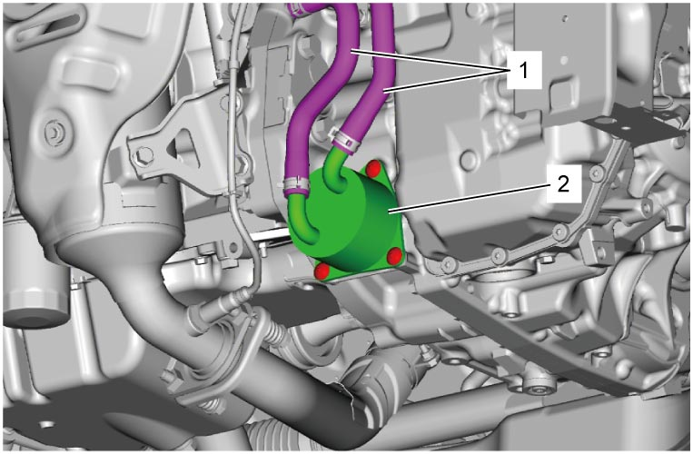

5A
| ATF Cooler Removal and Installation |
Removal
1)Remove engine undercover.
2)Drain coolant.
•M16A model: 
•K14C model:
•K14C model:
3)Drain ATF.
4)Disconnect ATF cooler hoses (1).
5)Remove ATF cooler (2).

 "Expand image")
Installation
Reverse removal procedure noting the following points.
 "Expand image")